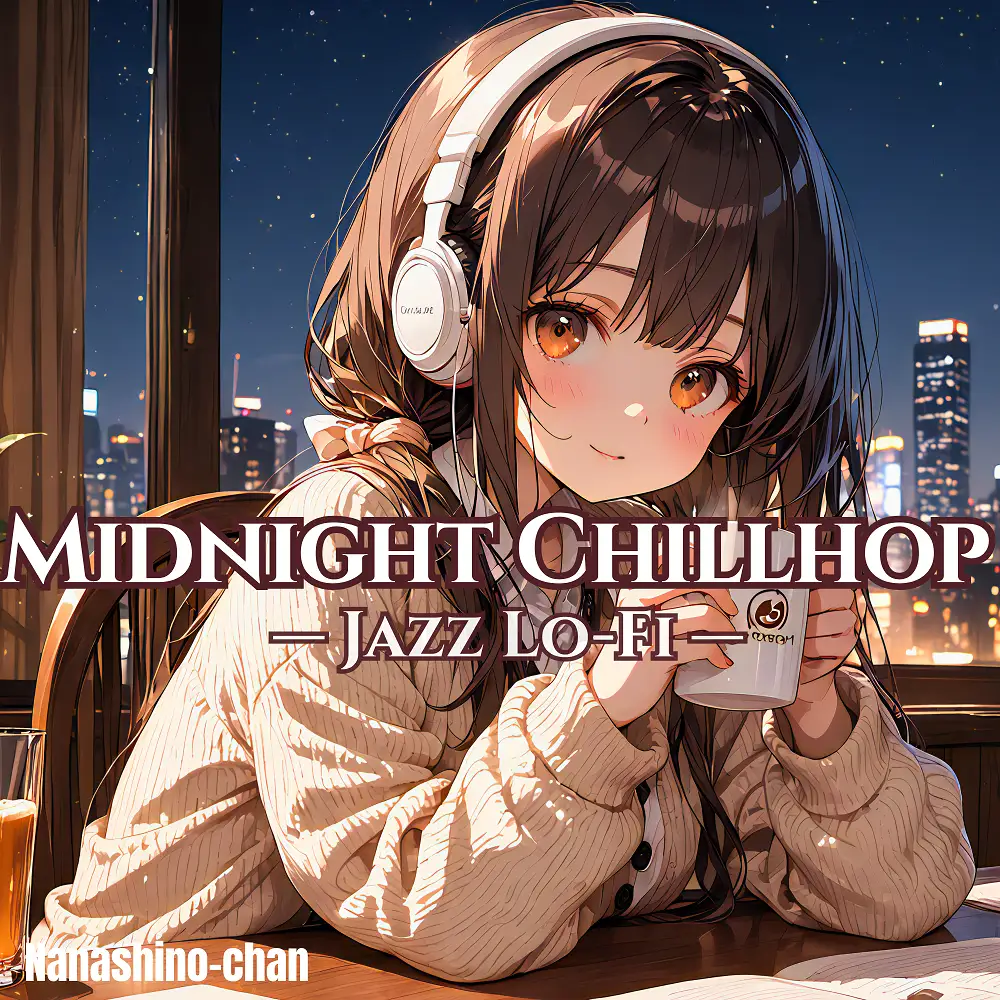

Chillhop · Jazz · Lo-Fi
Midnight Chillhop Jazz Lo-Fi: Smooth Beats for Focus, Relax & Sleep
Nanashino-chan
Explore Midnight Chillhop Jazz Lo-Fi: Smooth Beats for Focus, Relax & Sleep by Nanashino-chan: 26 instrumental tracks spanning Chillhop / Jazz / Lo-Fi. Start with Soft Lights, Quiet Thoughts / Espresso & Evening Glow, preview the collection and find your favorites on streaming services.
2025-08-22 · Released · 26 tracks · Instrumental
Preview the album
The jacket stays here until you choose a track. Playback uses YouTube.
YOUTUBE PREVIEW
Choose a track to listen
The jacket stays here until you choose a track. Playback uses YouTube.
If playback is unavailable, open the album or track on the streaming service.
Find this album on streaming services
Links marked “search” open search results. Select the album or track on the service.
Track list 26
- 01Soft Lights, Quiet Thoughts
- 02Espresso & Evening Glow
- 03Lo-Fi Espresso
- 04Looped Memories
- 05Autumn Pages
- 06Midnight Window View
- 07Distant Conversations
- 08Jazz for One
- 09Afterglow Sketch
- 10Lo-Fi Letters
- 11Coffee Break Nostalgia
- 12Cozy Static
- 13Fade into Vinyl
- 14Dusty Shelves
- 15Bookstore Dreams
- 16Lantern Reflections
- 17Echoes of a Quiet Day
- 18Study in Soft Focus
- 19Late Night Breeze
- 20Stillness Between Notes
- 21Piano in the Backroom
- 22Jazz in the Steam
- 23Under Dim Lights
- 24Sleepy Streets
- 25.Slow Fade Home
- 26Final Cup
Find a sound for your next post
Copy “Nanashino-chan + track title” and paste it into your social app’s music search. Availability depends on your region and account. Copying the name does not grant usage rights.